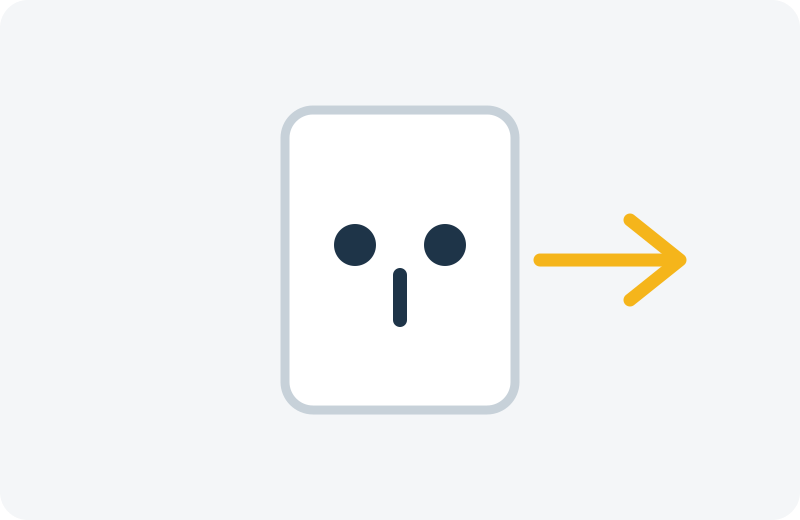

Disjuntor desarmando
Possíveis sobrecargas, curtos ou falhas no circuito precisam ser avaliados.
Instalações, reparos e manutenção elétrica com atendimento profissional. Solicite uma avaliação pelo WhatsApp.
Evite intervenções improvisadas. Falhas elétricas devem ser avaliadas por profissional qualificado.
Possíveis sobrecargas, curtos ou falhas no circuito precisam ser avaliados.
Diagnóstico de tomadas, fiação, conexões e circuitos.
Verificação de alimentação elétrica, fiação e instalação.
Pode indicar mau contato, conexão inadequada ou problema no circuito.
Situação que requer atenção imediata e avaliação profissional.
Diagnóstico da instalação e distribuição elétrica.
Fiação aquecendo, cheiro de queimado, faíscas ou disjuntores desarmando frequentemente podem indicar falhas na instalação. Evite improvisos e solicite uma avaliação profissional.
Atendimento para necessidades residenciais, comerciais e manutenções programadas.
Instalação e adequação de pontos elétricos residenciais e comerciais.
Solicitar orçamento →Instalação, substituição e correção de tomadas e interruptores.
Solicitar orçamento →Instalação e verificação da alimentação elétrica adequada ao equipamento.
Solicitar orçamento →Organização, manutenção e adequação de quadros elétricos.
Solicitar orçamento →Diagnóstico e substituição quando tecnicamente necessário.
Solicitar orçamento →Instalação de luminárias, spots, pendentes e iluminação interna ou externa.
Solicitar orçamento →Diagnóstico e correção de falhas em instalações existentes.
Solicitar orçamento →Serviços para lojas, escritórios, condomínios e pequenas empresas.
Solicitar orçamento →Descreva pelo WhatsApp o problema ou serviço desejado.
Quando necessário, envie fotos ou detalhes da instalação.
A equipe informa como será feita a avaliação e o orçamento.
Após combinar horário e condições, o serviço é realizado.
Imagens ilustrativas. Em um projeto comercial, substitua por fotos reais dos serviços e da equipe do cliente.

A VoltPrime oferece serviços elétricos residenciais e comerciais, desde pequenos reparos até instalações e manutenções completas. Nosso atendimento é baseado em diagnóstico, transparência e execução adequada de cada serviço.
* Dados demonstrativos de uma empresa fictícia, usados apenas para apresentar o layout.
Curitiba · São José dos Pinhais · Pinhais · Colombo · Araucária
Consulte disponibilidade para sua região pelo WhatsApp.
Consultar regiãoOs exemplos abaixo são fictícios e devem ser substituídos por avaliações reais antes da publicação de um cliente.
★★★★★“Precisava instalar novas tomadas e reorganizar parte da instalação. Atendimento organizado e serviço muito bem feito.”
Cliente demonstrativo
★★★★★“O disjuntor estava caindo constantemente. Foi identificado o problema e explicado o que precisava ser corrigido.”
Cliente demonstrativo
★★★★★“Solicitei melhorias na iluminação do escritório e todo o processo foi apresentado antes da execução.”
Cliente demonstrativo
Preencha os dados e o site monta uma mensagem organizada para enviar diretamente pelo WhatsApp.
Telefone:
E-mail:
Endereço:
Horário demonstrativo: Seg–Sex, 8h–18h · Sáb, 8h–12h
Sim. Esta demonstração contempla serviços residenciais e pode ser adaptada à área real de atuação do profissional.
Sim. O modelo também apresenta serviços para escritórios, lojas, condomínios e pequenas empresas.
Esse é um dos serviços que podem ser apresentados, sempre com avaliação adequada da instalação elétrica.
Sim, conforme avaliação do circuito e das condições da instalação.
O site prevê serviços de organização, manutenção e adequação de quadros de distribuição.
Sim. Fotos podem ajudar na orientação inicial, sem substituir uma avaliação presencial quando necessária.
A proposta desta demonstração é reforçar transparência e orçamento antes da execução.
A disponibilidade deve ser confirmada diretamente pelo WhatsApp. O site não promete atendimento 24 horas.
Condições de garantia dependem do serviço realizado e devem ser informadas pelo prestador no orçamento.
Fale com nossa equipe, explique o que está acontecendo e solicite uma avaliação.
Chamar no WhatsApp